Candidate List 20260416 Previous Day Next Day Section 1: New Sources (age<1d) Cosmological Afterglow
Section 2: Old (1-5d) sources observed last night placeholder
Section 1: New Afterglow/FBOT Cands Last Night (3)
1. ZTF26aasubdy (Afterglow?FBOT?) [Back to Top] [Share] [Trigger Swift] [Fritz ] [Lasair ]RA, Dec: 141.1276, 11.38366 9h24m30.62s, 11d23m1.16sGalactic (l, b): 220.42174, 39.07703 WARNING: -3.65 deg from ecliptic plane ext(g-r) = 0.037peak abs mag = -24.34 LegacySurvey: 1 sources in 3 arcsec Closest: d = 0.11 arcsec, 183.9 deg (east of north) photoz=0.15 (68% bounds 0.09, 0.45), type=DEV peak abs mag = -19.6 (68% bounds -18.3, -22.31) Consistent with synchrotron, g-r>0!
2. ZTF26aasulpk (FBOT?) [Back to Top] [Share] [Trigger Swift] [Fritz ] [Lasair ]RA, Dec: 131.66515, 80.78956 8h46m39.64s, 80d47m22.41sGalactic (l, b): 132.37423, 31.24805 ext(g-r) = 0.023LegacySurvey: 1 sources in 3 arcsec Closest: d = 0.73 arcsec, 108.9 deg (east of north) photoz=0.79 (68% bounds 0.69, 0.94), type=DEV peak abs mag = -24.24 (68% bounds -23.87, -24.68) Consistent with synchrotron, g-r>0!
3. ZTF26aasvjqa (Afterglow?FBOT?) [Back to Top] [Share] [Trigger Swift] [Fritz ] [Lasair ]RA, Dec: 185.17651, 23.64014 12h20m42.36s, 23d38m24.50sGalactic (l, b): 237.92493, 82.23411 ext(g-r) = 0.018peak abs mag = -20.41 LegacySurvey: 1 sources in 3 arcsec Closest: d = 2.13 arcsec, 264.4 deg (east of north) photoz=0.13 (68% bounds 0.1, 0.15), type=SER peak abs mag = -19.47 (68% bounds -18.92, -19.81) Consistent with synchrotron, g-r>0!
Section 2: Older Sources Observed Last Night (8)
0. ZTF26aaslfeo (Afterglow?) [Back to Top] [Share] [Trigger Swift] [Fritz ] [Lasair ]RA, Dec: 81.855, 46.70346 5h27m25.20s, 46d42m12.47sGalactic (l, b): 163.04821, 6.49427 ext(g-r) = 0.545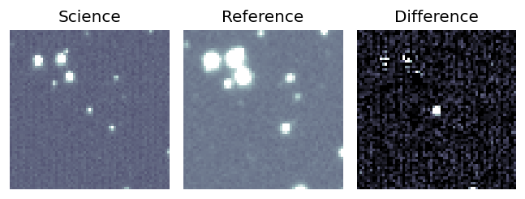
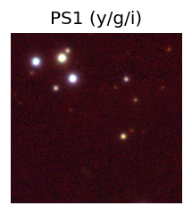
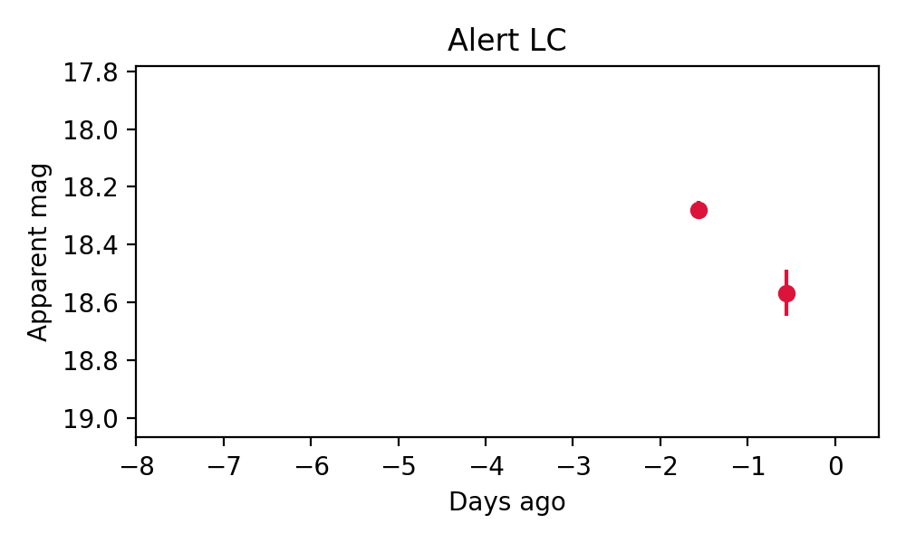
1. ZTF26aasmsqg (Afterglow?) [Back to Top] [Share] [Trigger Swift] [Fritz ] [Lasair ]RA, Dec: 215.41628, 13.22955 14h21m39.91s, 13d13m46.39sGalactic (l, b): 4.01892, 64.74857 ext(g-r) = 0.025LegacySurvey: 1 sources in 3 arcsec Closest: d = 7.08 arcsec, 47.0 deg (east of north) photoz=0.41 (68% bounds 0.27, 0.53), type=PSF peak abs mag = -25.15 (68% bounds -24.14, -25.83) Consistent with synchrotron, g-r>0!
2. ZTF26aasnlpp (FBOT?) [Back to Top] [Share] [Trigger Swift] [Fritz ] [Lasair ]RA, Dec: 220.23186, 5.4102 14h40m55.65s, 5d24m36.72sGalactic (l, b): 358.04024, 56.07967 ext(g-r) = 0.04peak abs mag = -21.10 LegacySurvey: 1 sources in 3 arcsec Closest: d = 0.33 arcsec, 4.5 deg (east of north) photoz=0.04 (68% bounds 0.03, 0.06), type=SER peak abs mag = -18.97 (68% bounds -18.34, -19.73)
3. ZTF26aastdwe (FBOT?) [Back to Top] [Share] [Trigger Swift] [Fritz ] [Lasair ]RA, Dec: 136.39455, 12.6849 9h 5m34.69s, 12d41m5.63sGalactic (l, b): 216.4733, 35.43649 WARNING: -3.79 deg from ecliptic plane ext(g-r) = 0.028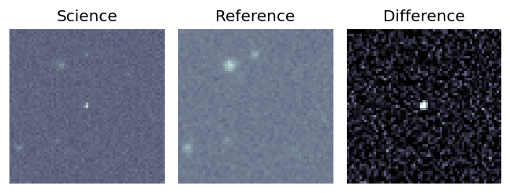
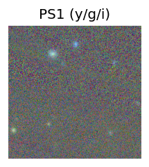
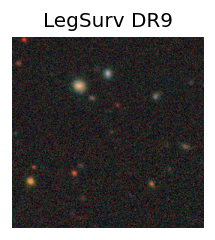
LegacySurvey: 1 sources in 3 arcsec Closest: d = 1.32 arcsec, 271.5 deg (east of north) photoz=0.54 (68% bounds 0.44, 0.66), type=REX peak abs mag = -23.2 (68% bounds -22.68, -23.76) 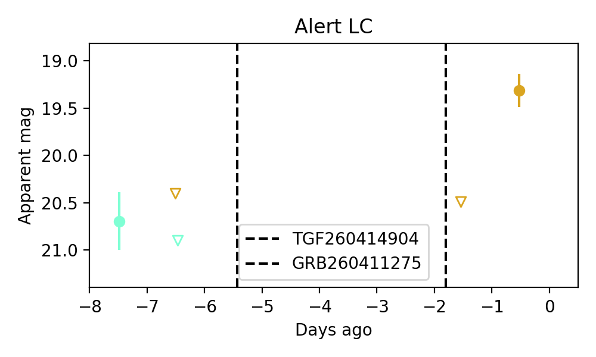
4. ZTF26aasvisu (FBOT?) [Back to Top] [Share] [Trigger Swift] [Fritz ] [Lasair ]RA, Dec: 188.59571, 13.36933 12h34m22.97s, 13d22m9.58sGalactic (l, b): 285.93314, 75.67517 ext(g-r) = 0.032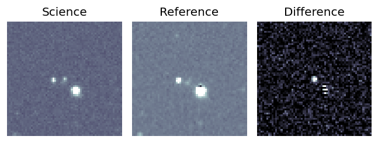
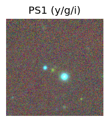
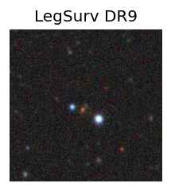
peak abs mag = -21.64 LegacySurvey: 1 sources in 3 arcsec Closest: d = 0.39 arcsec, 214.5 deg (east of north) photoz=0.44 (68% bounds 0.31, 0.59), type=EXP peak abs mag = -21.27 (68% bounds -20.34, -22.03) 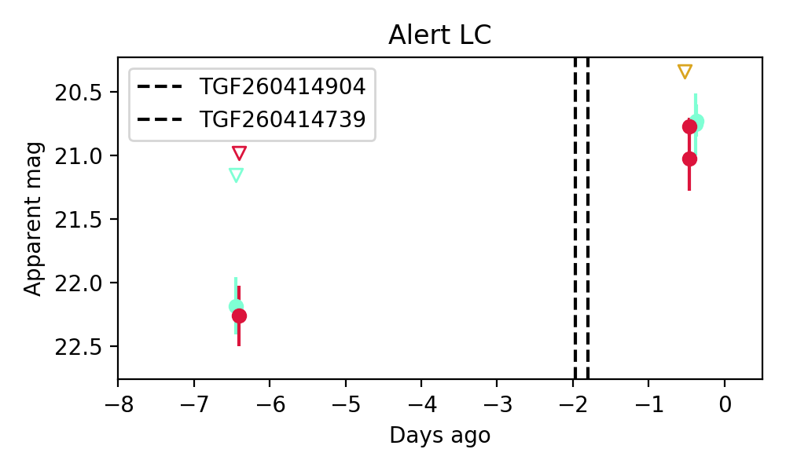
Consistent with synchrotron, g-r>0!
5. ZTF26aasvkzi (FBOT?) [Back to Top] [Share] [Trigger Swift] [Fritz ] [Lasair ]RA, Dec: 188.07107, 12.01643 12h32m17.06s, 12d 0m59.16sGalactic (l, b): 285.44434, 74.23427 ext(g-r) = 0.032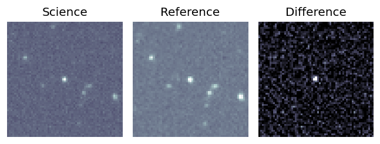
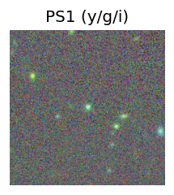
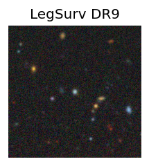
peak abs mag = -19.24 LegacySurvey: 1 sources in 3 arcsec Closest: d = 0.26 arcsec, 198.3 deg (east of north) photoz=0.23 (68% bounds 0.19, 0.28), type=REX peak abs mag = -19.5 (68% bounds -19.01, -19.95) 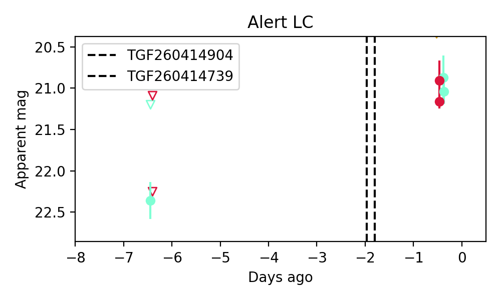
6. ZTF26aasvpdj (Afterglow?) [Back to Top] [Share] [Trigger Swift] [Fritz ] [Lasair ]RA, Dec: 185.15368, 10.05973 12h20m36.88s, 10d 3m35.02sGalactic (l, b): 278.41387, 71.44904 ext(g-r) = 0.024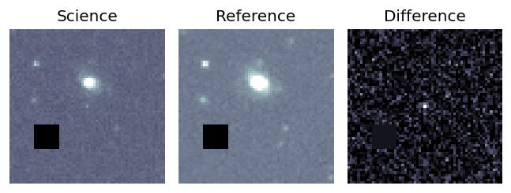
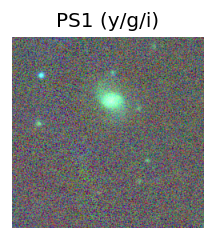
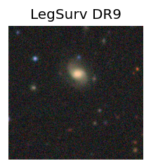
peak abs mag = -17.46 LegacySurvey: 1 sources in 3 arcsec Closest: d = 6.40 arcsec, 321.7 deg (east of north) photoz=0.25 (68% bounds 0.07, 0.45), type=EXP peak abs mag = -19.74 (68% bounds -16.88, -21.23) 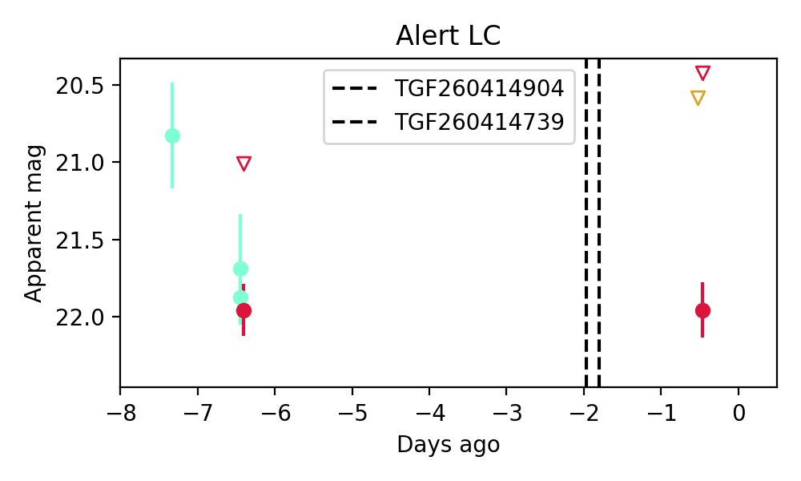
Consistent with synchrotron, g-r>0!
7. ZTF26aasvsgb (Afterglow?FBOT?) [Back to Top] [Share] [Trigger Swift] [Fritz ] [Lasair ]RA, Dec: 150.27578, 12.89376 10h 1m6.19s, 12d53m37.52sGalactic (l, b): 223.97052, 47.77541 WARNING: 0.71 deg from ecliptic plane ext(g-r) = 0.036peak abs mag = -23.80 LegacySurvey: 1 sources in 3 arcsec Closest: d = 1.05 arcsec, 206.2 deg (east of north) photoz=0.06 (68% bounds 0.05, 0.11), type=SER peak abs mag = -18.2 (68% bounds -17.61, -19.39)